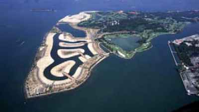

Conservation
status: The natural western part of Sentosa is listed for
use as 'Sports and Recreation' in the URA
Master Plan 2008, i.e., "Area to be used or intended to be
used mainly for sports and recreational purposes" and listed
as 'Park/Open Space' in Parks
and Waterbodies Plan.
Current conservation activities: Since
2006, TeamSeagrass
with NParks
has been monitoring seagrasses at Sentosa. Some school and scientific
work is also done ocassionally on these shores. The intertidal
area is also regularly surveyed by wildsingapore.
History:
Sentosa Cove was built by reclaiming Buran Darat and nearby reefs in 1991. The reclamation increased the size of Sentosa island by nearly 25%. Photo below from Vision of Sentosa Cove on the Sentosa Cove website.

Northern reefs were reclaimed
in 2007 for Resorts World Sentosa.
In 2012, a 'security barrier' of floating blue drums was installed on the natural shores of Tanjung Rimau Sentosa. In Jun 2013, the drums were observed battering the rocky shore and reefs there. In Aug 2013, the blue drums started to disintegrate. |
|
About
the name: Originally called Pulau Blakang
Mati Blakang=Behind; Mati=Death, thus 'Island
Where Death Lurks', possibly referring to the gruesome
deaths there including the massacres
during WWII. When the island was developed as a tourist
destination, this was changed to a more propitious name;
Sentosa=tranquility. |
|
|